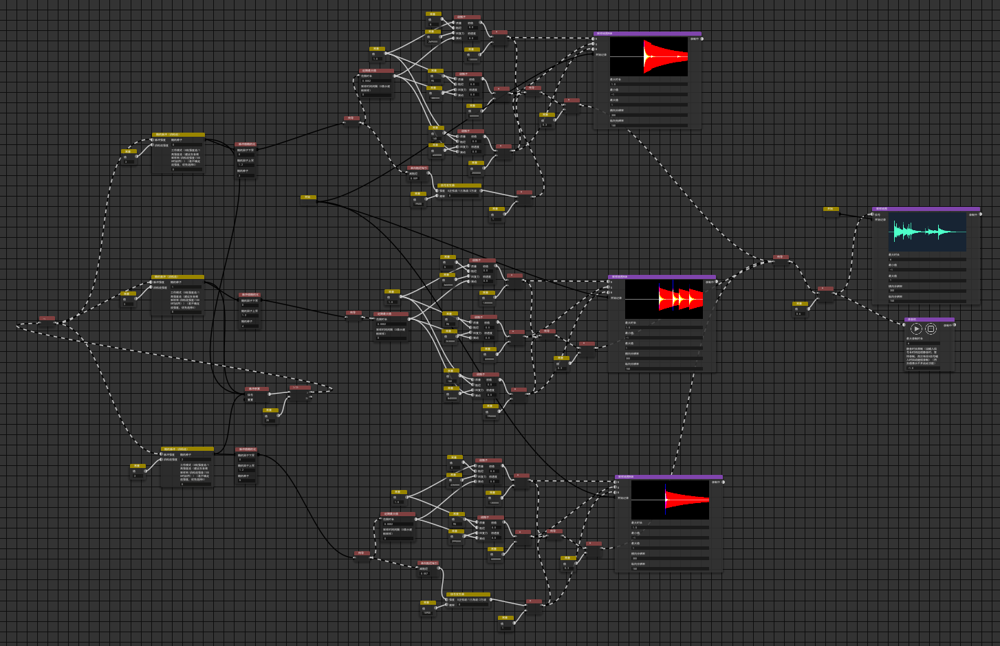
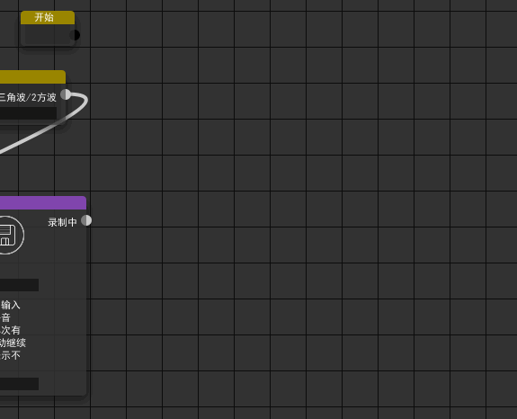
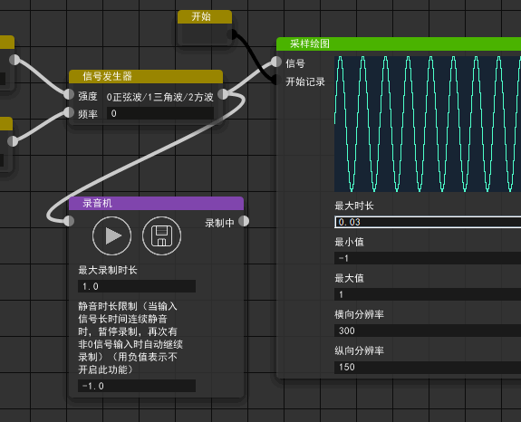
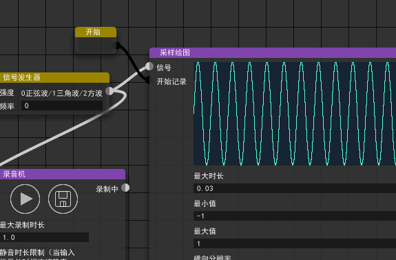
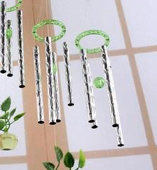
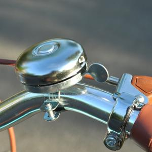
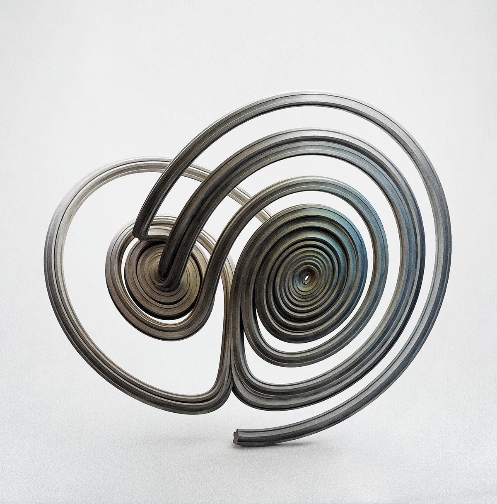

Audio Creator 具有节点式的编程界面（类似 Grasshopper 、 Houdini 、 Substance Designer ），这是近年来流行的交互式界面设计风格，能够帮助用户快速地构建想要的逻辑。 例如，如果用户想生成类似警笛的声音，可以放置两个产生正弦波的节点，其中一个频率为数百赫兹（警笛声的频率），另一个频率为1 Hz左右（警笛声响度变化的频率）， 然后将两种正弦波相乘（这样低频正弦波成了高频正弦波的包络），即得结果。
一个典型的 Audio Creator 文档类似下图。

Audio Creator 具有良好的交互式体验。
 

根据目前测试的结果， Audio Creator 能有效地生成多类型的音效。 下面展示一些结果，您可以点击图片播放相应的声音。
  
与大多数节点式软件不同， Audio Creator 允许连接出现环路。 这意味着一组节点产生的信号可以被循环性地馈送至其自身。 一个典型的应用是实现一个可以求微分方程数值解的积分器，上面展示的最后一个音频就是这样生成的。 这还意味着一个事实： Audio Creator 是图灵完备的。 也就是说，原则上讲， Audio Creator 能生成几乎任何信号。